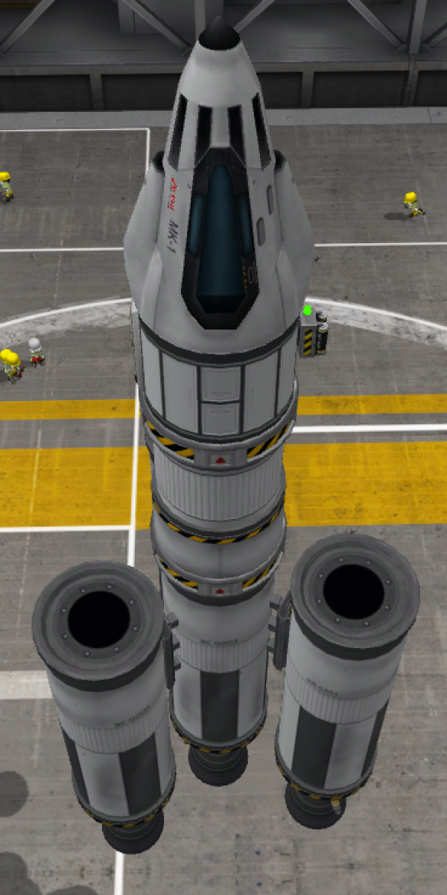

So I’ve discovered an another awesome sandbox game! I really thought I didn’t like them, but I was wrong. Trying to build space ships is fun! If you succeed, you get to go to space! If you fail things explode in amusing ways! Bonus, you’re some kind of magic god in the game so you can roll back time and make the explosion never happen!
My only complaint so far has been just how obscure the UI can be… obscure. You have to click or double click or right click or possibly even double right click on exactly the right part of your ship in order to get a menu to show up...
The best part of this game though is just how cool I feel while playing! Who doesn’t want to feel like a rocket scientist? It feels really cool to understand how orbital mechanics work.
BONUS: Awesome ships I’ve made!
I found it is IS possible to build a plane capable of taking off without wheels
